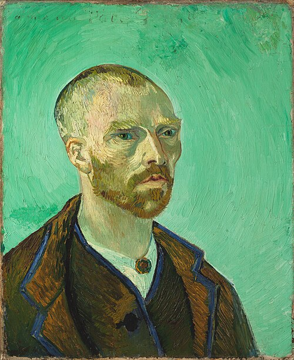

작품
F476 Self-portrait, dedicated to Paul Gauguin

회화 · 카탈로그 F476 · JH1581 · 1888-09
고해상도 이미지 보기 · Wikimedia Commons
이 그림을 언급한 편지 (13편)
- L628 베르나르에게 (1888-06 색채론)
- L678 빌레미엔에게 (1888-09 노란 집)
- L680 테오에게 (1888-09 노란 집)
- L681 테오에게 (1888-09 노란 집)
- L683 테오에게 (1888-09 프로방스 풍경)
- L685 테오에게 (1888-09 노란 집)
- L695 고갱에게 (1888-10 고갱과의 협업)
- L696 베르나르에게 (1888-10 노란 집)
- L697 테오에게 (1888-10 초상화)
- L698 베르나르에게 (1888-10 밤의 카페)
- L704 테오에게 (1888-10 프로방스 풍경)
- L735 테오에게 (1889-01 정신건강)
- L736 테오에게 (1889-01 재정과 테오)
이미지: 퍼블릭 도메인 · Wikimedia Commons. 작품 식별은 Faille(F)·Hulsker(JH) 카탈로그 번호와 Wikidata를 사용했습니다.
이 문서를 가리키는 문서 13
- L628 베르나르에게 (1888-06 색채론)
- L678 빌레미엔에게 (1888-09 노란 집)
- L680 테오에게 (1888-09 노란 집)
- L681 테오에게 (1888-09 노란 집)
- L683 테오에게 (1888-09 프로방스 풍경)
- L685 테오에게 (1888-09 노란 집)
- L695 고갱에게 (1888-10 고갱과의 협업)
- L696 베르나르에게 (1888-10 노란 집)
- L697 테오에게 (1888-10 초상화)
- L698 베르나르에게 (1888-10 밤의 카페)
- L704 테오에게 (1888-10 프로방스 풍경)
- L735 테오에게 (1889-01 정신건강)
- L736 테오에게 (1889-01 재정과 테오)